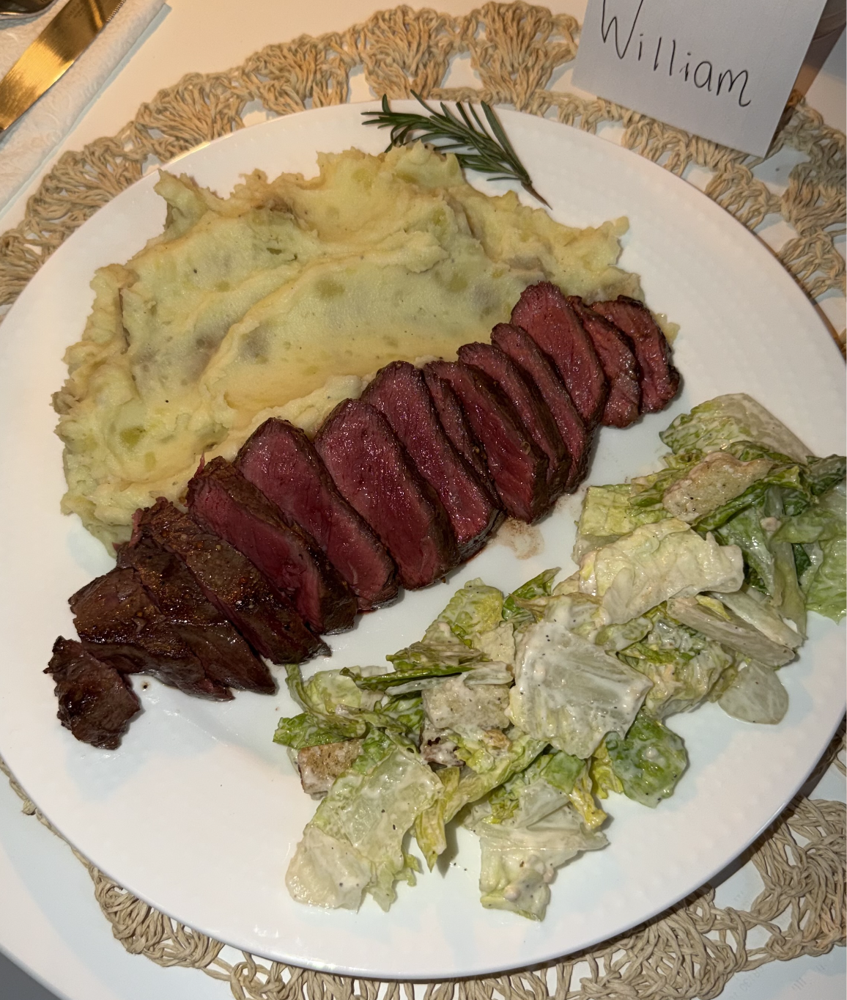

About This Recipe
This is a classic homemade dinner that is filling, simple and full of flavor. Juicy steak paired with creamy mashed potatoes makes a great meal for any night of the week.
Ingredients
For the Steak
- 2 steak cuts (your choice)
- 1 tablespoon olive oil
- 2 tablespoons butter
- 2 cloves garlic, minced
- 1/2 teaspoon salt
- 1/2 teaspoon black pepper
- 1/2 teaspoon garlic powder
For the Mashed Potatoes
- 4 medium potatoes
- 3 tablespoons butter
- 1/4 cup milk
- 1/2 teaspoon salt
- 1/4 teaspoon black pepper
Instructions
1. Make the Mashed Potatoes
- Peel the potatoes and cut them into smaller pieces.
- Place potatoes in a pot of water and bring to a boil.
- Cook for about 15-20 minutes until fork tender.
- Drain the water and return potatoes to the pot.
- Add butter, milk, salt and pepper.
- Mash until smooth and creamy.
2. Cook the Steak
- Season both sides of the steak with salt, pepper and garlic powder.
- Heat olive oil in a skillet over medium-high heat.
- Add the steak and cook to your preferred doneness.
- Add butter and garlic to the skillet.
- Spoon the melted butter over the steak while cooking.
- Remove the steak and let it rest for 5 minutes before serving. Check that it reaches a safe internal temperature.
3. Serve
Serve the steak alongside a scoop of mashed potatoes. Add extra butter or seasoning if desired and enjoy!